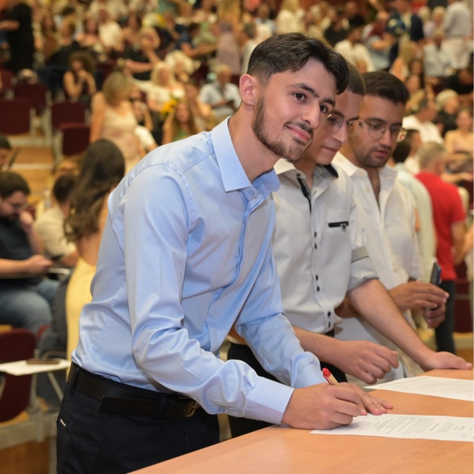
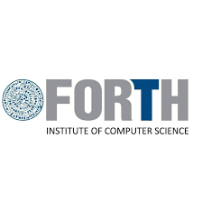

Ntenis Sampani
Backend & Cloud Engineer
Profile
Computer Science M.Sc. student focused on backend development and cloud. Experienced in building REST APIs with Node.js, Spring Boot, and Flask, working with SQL and NoSQL databases, and deploying applications on AWS with Docker and CI/CD. AWS Certified Cloud Practitioner.
Education
University of Crete, Heraklion
M.Sc. in Computer Science (September 2025 – Present)
B.Sc. in Computer Science (September 2020 – July 2025)
Certification
- AWS Certified Cloud Practitioner (CLF-C02) — Amazon Web Services, 2025
Experience

Software Engineering Intern — FORTH, Heraklion
July 2024 – September 2024
- Developed a concurrent system for efficient access to shared data structures.
- Applied parallel processing and synchronization techniques using C and MPI.
Technical Skills
- Backend: Node.js, Express, Spring Boot, Flask, Next.js API Routes, REST APIs
- Languages: Java, Python, TypeScript, JavaScript, C, C++
- Databases: PostgreSQL, MySQL, MongoDB, DynamoDB, Prisma
- Cloud & DevOps: AWS, Docker, Terraform, GitHub Actions, CI/CD, Linux
- Frontend: React, Next.js, Tailwind CSS
- AI Development Tools: OpenAI Codex, Claude Code
Projects
- Workout PR Tracker: Full-stack fitness tracking app with a Next.js API backend and a PostgreSQL database modelled with Prisma, written in TypeScript and deployed on Vercel.
- Distributed Cloud System on AWS: Built and deployed an event-driven system using EC2, SQS, Lambda, DynamoDB, IAM, and CloudWatch.
- Multi-Environment DevOps Platform: Designed a CI/CD pipeline with GitHub Actions, Docker, and AWS EC2 to deploy a Node.js app across dev, staging, and production, with automated promotion workflows and branch protection.
- Cloud Infrastructure Automation: Created reusable Terraform modules and CI/CD workflows for deploying cloud infrastructure through GitHub Actions.